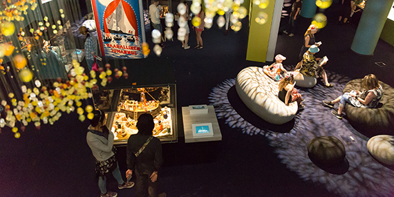

Avoinna ti-ke 9-17, to-pe 9-19, la-su 10-17 / Aikuiset 12 €,lapset 6 € / Tampere-talo, Yliopistonkatu 55, Tampere




Kuinkas sitten kävikään?
Missä muumien esi-isät asuivat? Millainen oli Muumipapan villi nuoruus? Mitä hattivatit tekevät ukonilmalla? Nämä ja monet muut salaisuudet selviävät Kuinkas sitten kävikään -näyttelyssä.
Muumimuseon ensimmäisessä perusnäyttelyssä voit tutustua muumien koko tarinaan aina suuren tuhotulvan vedenpaisumuksesta vaarallisen juhannuksen kelluvaan teatteriin ja majakkasaaren arvoituksesta muumiperheen marraskuiseen katoamismysteeriin.
Lue lisää näyttelystä
Observatorio
Vaihtuvien näyttelyiden tilassa esillä kuvittaja Usko
Laukkasesta kertova näyttely 31.3.2019 saakka.
Muumimuseon Senioripaiva
Senioripäivänä seniorit sisään kahdella eurolla koko päivän!Päivän ohjelmassa on klo 14 opastus Satumaja – Usko Laukkasen kuvituksia -näyttelyyn. Opastukselle ovat kaikki museovieraat tervetulleita. Ateljee on avoinna [...]
Muumimuseon Taikatalvi -tapahtuma Sorsapuistossa 2.3.2019!
Laske jäämäkeä, luistele Sorsalammella, ota vauhdit karusellissa, katsele muumianimaatioita, tapaa Muumipeikko ja nauti kodan lämmöstä. Luvassa on taianomainen päivä täynnä talvisia aktiviteetteja ja muumimaisen mukavaa yhdessäoloa. Puisto on puettu taianomaiseen valaistukseen, joka luo täydelliset puitteet unelmien talvipiknikille. Voit tuoda eväät mukanasi, mutta ruokaa ja juomaa voit ostaa myös paikan päältä. Kehitysvammaisten Tukiliiton Malike-toiminta on mukana mahdollistamassa vaikeasti vammaisten lasten ja aikuisten osallistumista luisteluun klo 14–18. Pimenevässä talvi-illassa nautit elävästä musiikista ja kuumista juomista.
Tervetuloa nauttimaan talven parhaasta tunnelmasta yksin, kaksin tai porukalla!

Tampere-talo Shop
Tampere-talon myymälässä on laadukas valikoima muumiaiheisia tuotteita, suomalaista designia ja käsityötuotteita. Myymälä palvelee niin museokävijöitä kuin myös muita Tampere-talon vieraita. Valikoimaan kuuluu jännittäviä muumituotteita, muotoilua ja musiikkia, Tove Janssonin kirjoittamia ja kuvittamia muumikirjoja, Tampere-aiheisia tuotteita ja suomalaisia klassikkobrändejä. Muumipostikortteihin saat meiltä postimerkit ja Muumimuseon oman postileiman.
Ei voi tietää, ovatko ne olemassa vai näkyvätkö ne vain.
Kaikki on hyvin epävarmaa, ja juuri se tekee minut levolliseksi.
Tuu-tikki
Muumimuseon lukukirjasto
Tove Janssonin kirjoittamat ja kuvittamat muumikirjat kiehtovat niin lapsiakin kuin aikuisiakin. Kirjaston hyllynkolossa voit istua rauhassa ihmettelemässä Toven taituruutta ja kynän käyttöä. Kokoelmassa on aarteita vuosien varrelta ja saamme uusia aarteita kirjastoon jatkuvasti.
Lukukirjasto houkuttelee kulkijaa Tampere-talon pääaulassa ja sinne voi poiketa milloin vain talon ollessa auki.